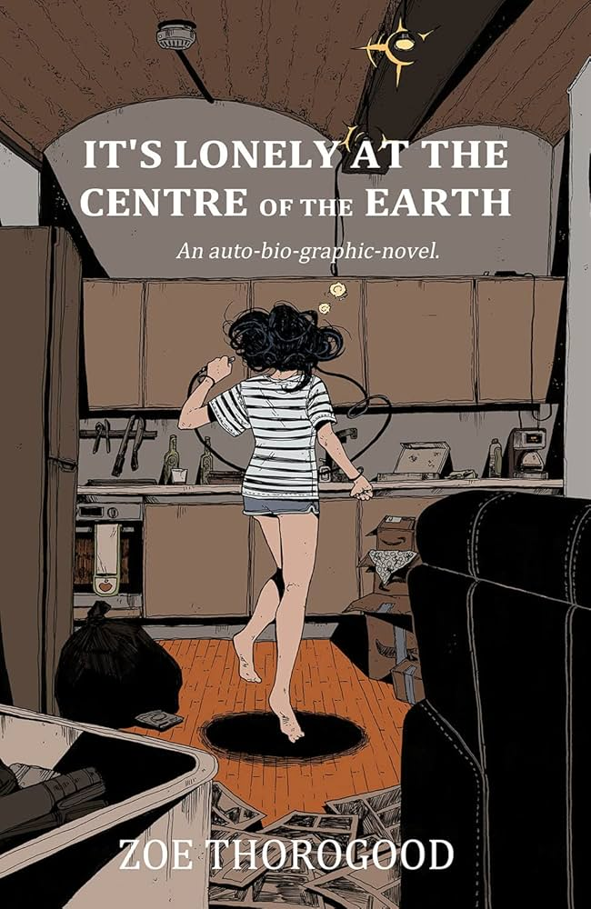

Zoe Thorogood is a British comic book author and artist. She is the author of The Impending Blindness of Billie Scott and It's Lonely at the Centre of the Earth, as well as a run of Hack/Slash through 2022-to-2023, in which series creator Tim Seeley resumed writing. In addition to her work on independent comics, she also co-created the character of Spider-UK (Zarina Zahari) together with Ramzee for Marvel Comics and wrote multiple stories in anthologies published by DC Comics.
In 2019, Thorogood began working in comics as a freelance artist. She attended a convention organised in London by Image Comics, where the publisher was impressed by the artist's portfolio, and introduced her to including Kieron Gillen, approved her for "the future of comics".
Her first graphic novel, The Impending Blindness of Billie Scott, was published in 2020. While she has suffered from sight problems since the age of 3, in 2017 she learned that her retina was slowly being detached, and that she could eventually go blind. Although inspired by her personal story, the character of Billie Scott is not an incarnation of Thorogood, as she would later explain in her second graphic novel.
